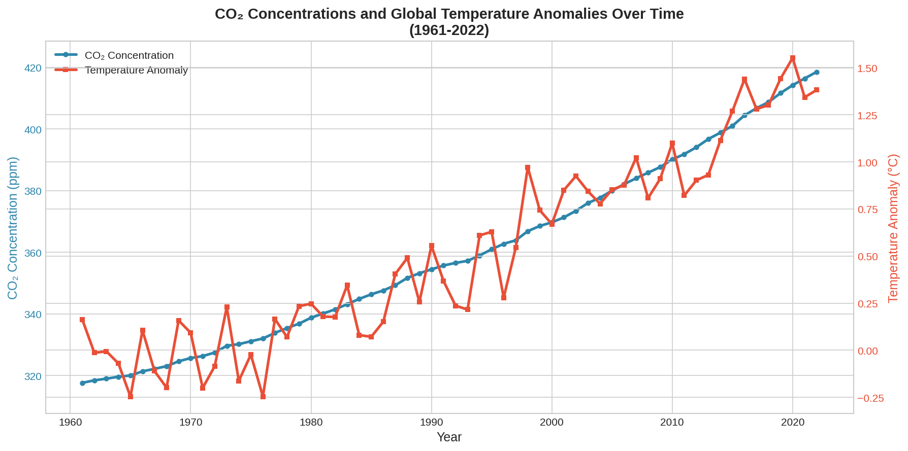
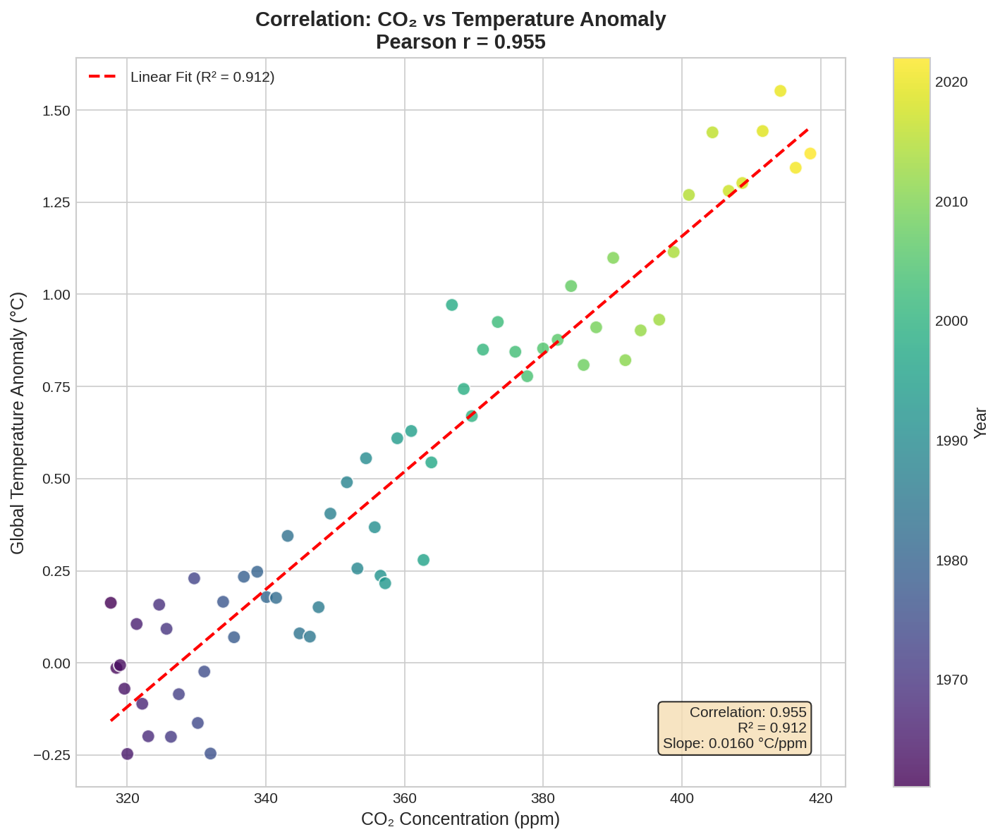
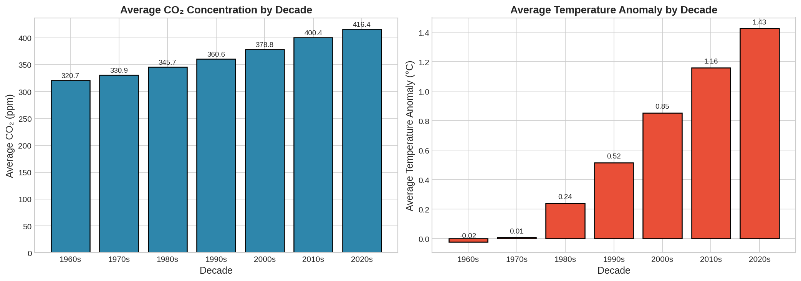
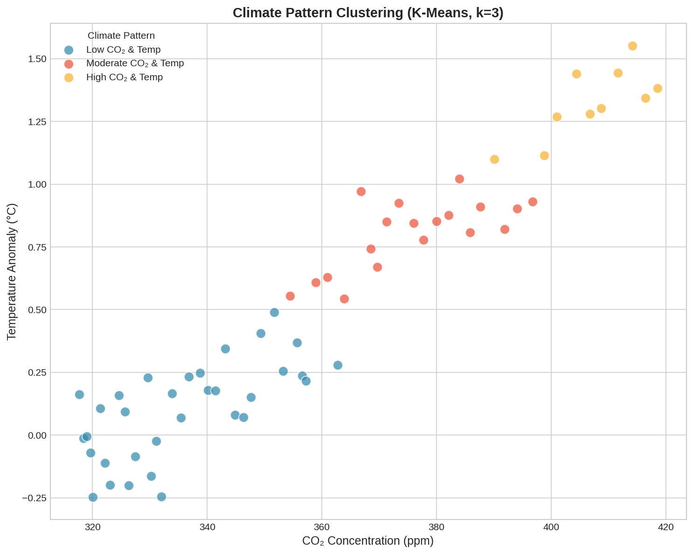

Executive Summary Dashboard

A comprehensive data science study analyzing the 95.5% correlation between global CO₂ concentrations and temperature anomalies from 1961 to 2022.
Stark evidence showing temperature rise tracks CO₂ almost perfectly.
Global temperature increase observed from 1961 baseline to 2022.
Atmospheric CO₂ concentration rise of over 100ppm in 60 years.
Explore the detailed statistical analysis and climate modeling used in this project.

Tracking the parallel growth of CO₂ and Temperature over 6 decades.

Linear regression showing the 91.2% R-squared fit.

Visualizing how climate change has accelerated every 10 years.

Using K-Means to identify distinct climate eras.
Based on our regression model, we simulated the potential impact of CO₂ reduction on global temperature anomalies: